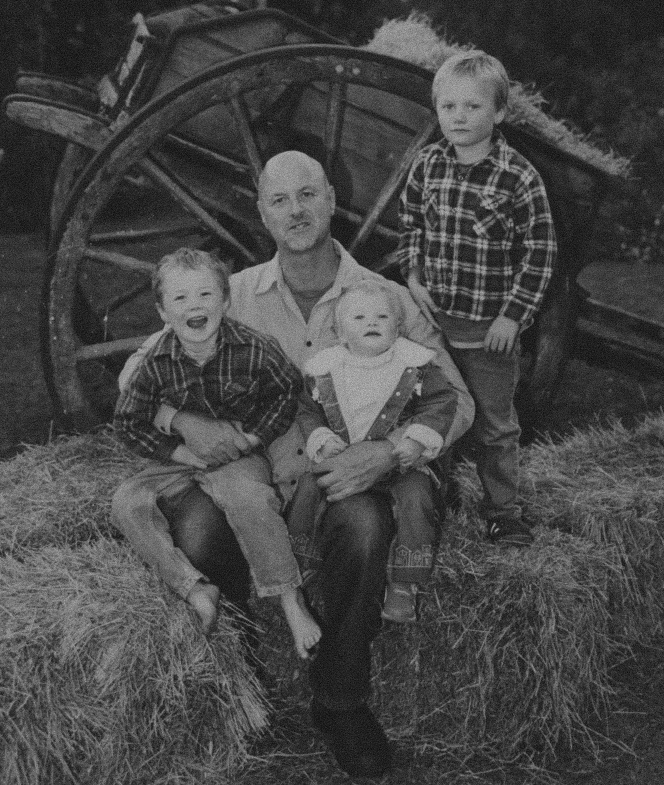
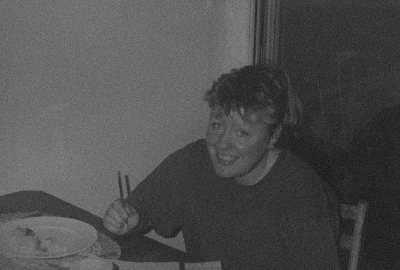

Throughout my life I have lived away from both of my parents at
different times. Now as an adult I carry on that separation for
different reasons.
I always felt this otherised me, especially in my younger years, and
only really found that a lot of people experience the same or similar
things throughout their lives. This become the persist of what i
wanted to explore with in this project.

As an adult the impact I primarily felt was toward my mum, who I spent
the most time away from and contacted the most while apart in those
times. Even now this remains the same, and while exploring old photos
of when me and my siblings were young I decided I to form a project
around this sense of separation.
Through iteration and concepting my mind went to creating a space for
others to come together over their connection and document their
personal experiences in separation.
Separation comes with a ornate sense of loneliness and isolation when
I personally feel it doesn’t need to. Throughout my experience
speaking with and documenting others’ stories I found that this is not
where the effects of separation stop.
I heard individualistic, and
unique feelings I never considered during times important
developmental times in personal lives. Some positive and some not.
Some cultural and some less so. Its through these human conversations
that I began to reconsider my own situation and reflect differently. I
believe this is the ultimate benefit of a resource such as Stories of
Separation.
Through this experimental site my hope its that others can find
connection and feel less separation in the same way that I did while
working on this project.
I’ve allowed further a place links for extended support and more on
the privacy around sharing this information in the through the
following links.
Feel free to reach out as well for anything else through the email:
storiesofseparation@gmail.com
